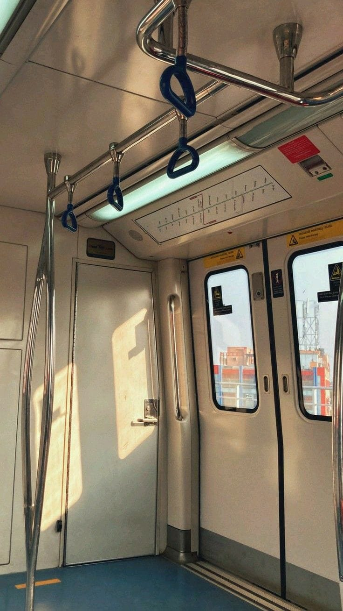
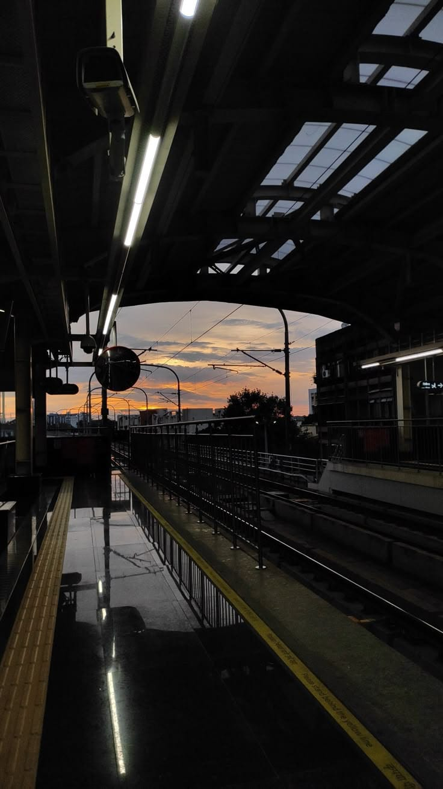
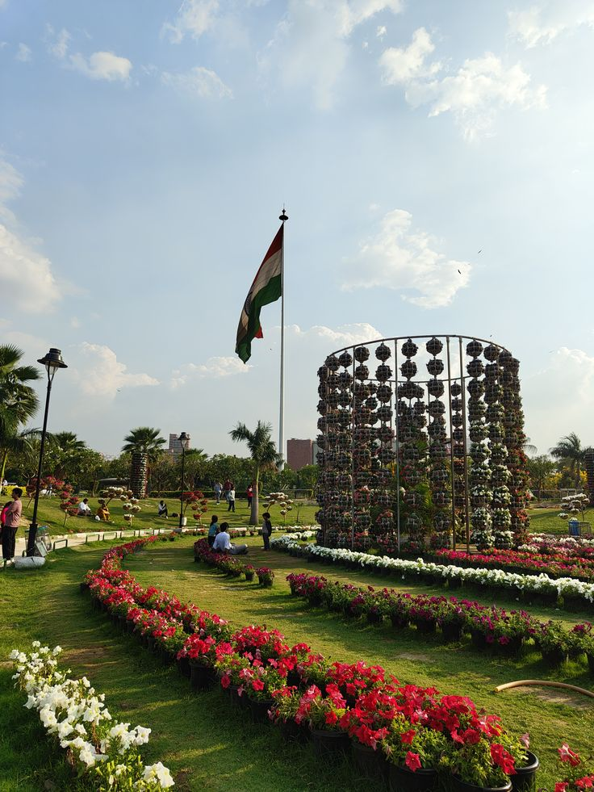
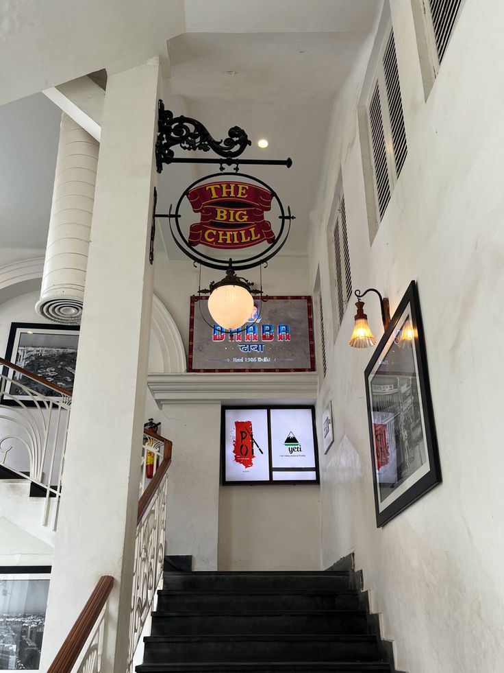
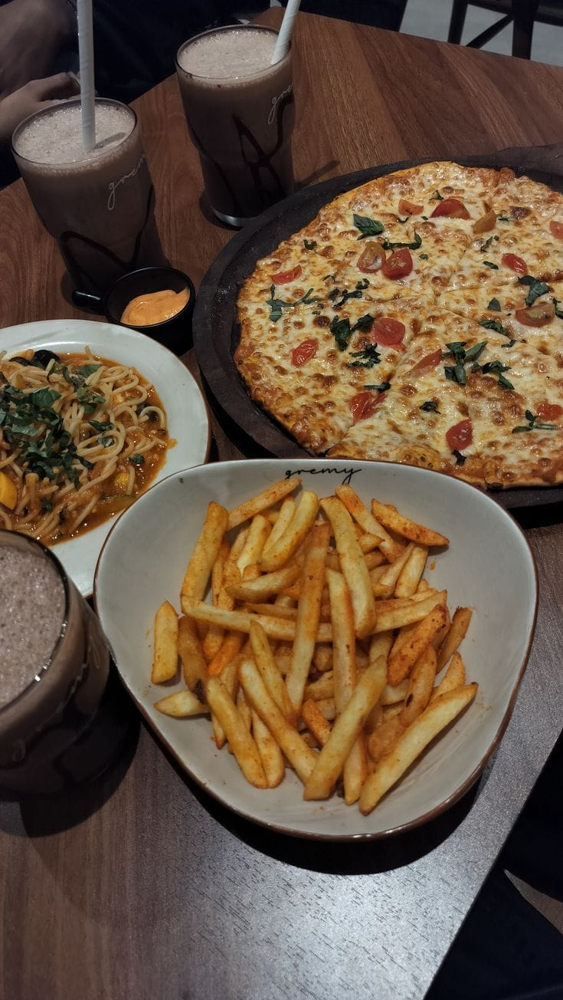

Connaught Place (CP) was one of the most interesting places I visited in Delhi. I travelled there through the metro, which made the journey easy and convenient. It has a mix of old-style buildings and modern shops, which makes it unique. When I first reached there, it was quite crowded, but also very lively. It felt like the center of the city where everything is happening at once.


Central Park Visit
I spent some time in Central Park, which is located in the middle of Connaught Place. After walking around the busy streets, the park felt relaxing. Many people were sitting on the grass, talking with friends, and some were just resting.
There were also street performers and small groups of people enjoying music, which made the place feel more energetic. I sat there for a while and just observed everything. It was a good break from the noise of traffic around CP.

Food and Restaurant Experience
One of the best parts about CP is the food. There are many options, from cafes to proper restaurants, and I really enjoyed what I ate there.
After walking for a long time, I decided to sit and relax for some time at Big Chill. The place had a nice atmosphere compared to the busy streets outside.
I ate pizza, fries, and a milkshake, and everything tasted really good. The food felt perfect after walking around for a long time, and the seating was comfortable too.
What I liked most was that the area gives you so many choices, so you can explore, eat, and spend time with friends all in one place. Many friends and families were also sitting there and enjoying their time, which made the place feel warm and lively.
Restaurant Name: Big Chill
- Pizza
- Fries
- Milkshake


My Experience
Overall, my experience at Connaught Place was very good. It is a place where you can do many things: walk around, eat different types of food, sit in parks, and visit cafes.
Even though it was crowded, I still enjoyed the atmosphere. It felt energetic and fun. If I visit Delhi again, I would definitely go to CP again and explore more.